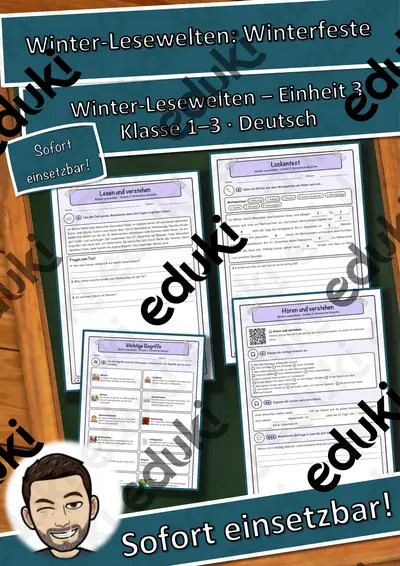
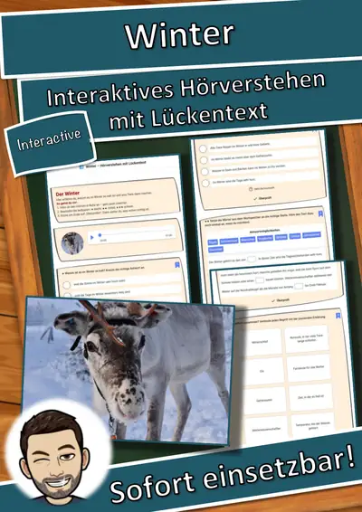
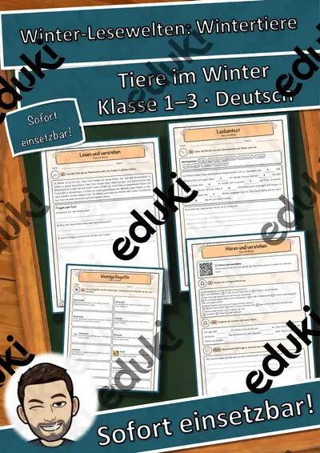
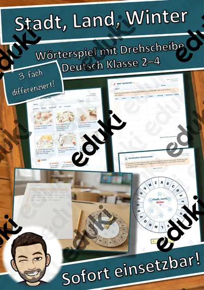

Satzwerkstatt Winter Materialpaket: Schlangensätze, Purzelsätze, Würfelsätze – 3 Materialien in 3 Stufen (Klasse 1–2, DaZ)
Sätze lesen, ordnen und würfeln – drei Materialien für Klasse 1–2 und DaZDie Satzwerkstatt Winter übt Satzgrenzen, Satzbau und Schreiben mit drei Aufgabenformen: Schlangensätze trennen, Purzelsätze ordnen, Würfelsätze bilden. Alle Sätze sind winterlich, kindgerecht und per Skript geprüft. Jedes Material ist dreifach differenziert (Farbhilfe bzw. kurze Sätze, mittlere Stufe, anspruchsvolle Stufe).
Preisvorteil: Einzeln kosten die 3 Materialien zusammen 5,07 €. Im Paket zahlst du nur 3,99 € (rund 21 % gespart).
Die 3 Materialien
Schlangensätze Winter: 36 Sätze trennen und schreiben in 3 Stufen mit Schlangenkarten (Klasse 1–2, DaZ)Purzelsätze Winter: 36 Wörter-Durcheinander-Sätze ordnen mit Legestreifen in 3 Stufen (Klasse 1–2, DaZ)Würfelsätze Winter: über 3000 Sätze würfeln und schreiben, mit Bildwürfel-Netzen in 3 Stufen (Klasse 1–3, DaZ)In jedem Material
Übersicht und Beispielseite zum gemeinsamen Üben
Arbeitsblätter in 3 Stufen mit Schreibzeilen, dazu Schlangenkarten, Legestreifen bzw. Bildwürfel-Netze zum Ausschneiden„Für Schnelle“: Zusatzaufgaben und Knobelaufgabe
Lösungen zur Selbstkontrolle, Ich-kann-Check mit Urkunde, Lehrkraftseite
Insgesamt 36 Schlangensätze, 36 Purzelsätze und 3096 mögliche Würfelsätze. Einsatz: Deutsch Klasse 1–2, DaZ, Förderunterricht, Freiarbeit, Wochenplan, Vertretungsstunde, Stationenarbeit.
Aufgaben, Sätze und Layout eigene Erstellung. Illustrationen aus dem eigenen Bilderpool (KI-erzeugt, bearbeitet), keine Fotos, keine realen Personen, keine Marken. Texte mit KI-Unterstützung erstellt und geprüft.
Viel Freude beim Lesen, Ordnen und Würfeln wünscht dir Snice!
Ähnliche Materialien

Schlangensätze Winter: 36 Sätze trennen und schreiben in 3 Stufen mit Schlangenkarten (Klasse 1–2, DaZ)

Purzelsätze Winter: 36 Wörter-Durcheinander-Sätze ordnen mit Legestreifen in 3 Stufen (Klasse 1–2, DaZ)

Würfelsätze Winter: über 3000 Sätze würfeln und schreiben, mit Bildwürfel-Netzen in 3 Stufen (Klasse 1–3, DaZ)

Schreibroute Herbst: Laufdiktat und Satzbau in drei Stufen

Winter-Lesewelten Winter-Lesewelten – Einheit 3: Winterliche Bräuche – Differenziertes Lesetraining für die Grundschule

Winter – Hörverstehen mit Lückentext (interaktiv)

Winter-Lesewelten Tiere im Winter – Differenziertes Lesetraining für die Grundschule (Grundschule, Klasse 1–3)
